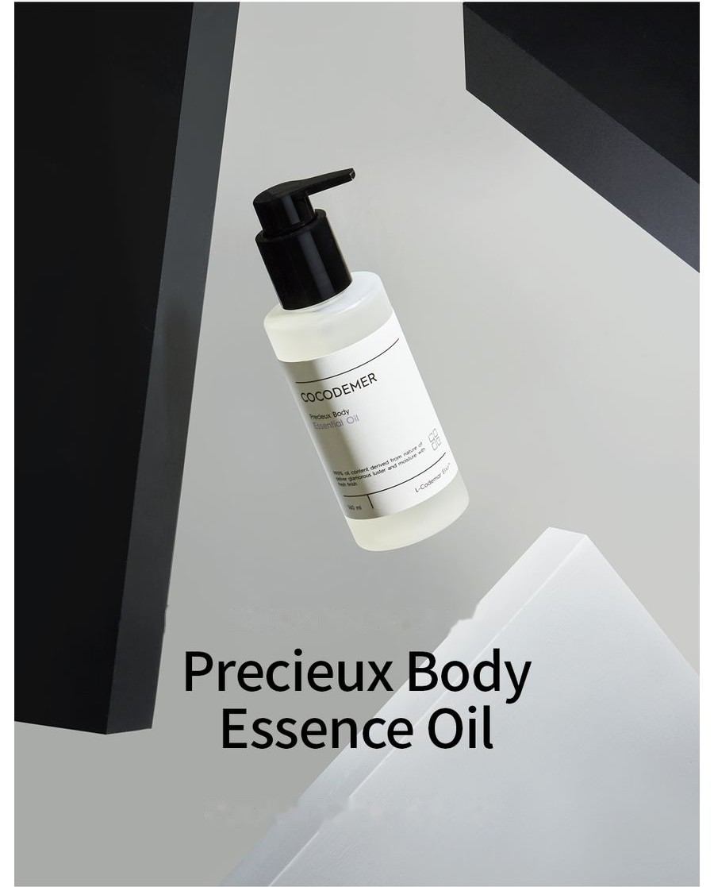

COCODEMER Precieux Body Essence Oil
| Contenido | 160ml |
|---|---|
| Indicado para | Todo tipo de piel |
| Tecnología clave | L-CODEMAR ELIXIR™ |
| Fabricante · Distribuidor responsable | JUNGCOS CO., LTD. / COCODEMER CO., LTD. |
Este producto se desarrolló como parte de nuestra línea de cosmética personalizada. Actualmente no está a la venta. Para consultas sobre una nueva producción o una renovación, contáctenos a través de Consulta B2B.

Cuidado para pieles secas y sensibles
Cuidado corporal suave y sedoso con aceites 100 % de origen natural
Se absorbe en cuanto entra en contacto con la piel, con un acabado fresco e ingrávido. Después, un velo de hidratación sella la superficie, reduce al mínimo la pérdida de agua y mantiene la piel hidratada durante más tiempo.
Los aceites nutritivos forman un velo protector que resguarda la piel áspera y sensibilizada, y ayudan a evitar que la humedad se escape.
Llena la piel de hidratación para una textura lisa, lustrosa y suave.
Ingredientes 100 % de origen natural
Coco, semilla de meadowfoam, oliva, argán, semilla de almendra, semilla de té verde, macadamia y semilla de camelia. Todos 100 % de origen natural, todos afines a la piel, de absorción rápida y acabado fresco, por lo que se adaptan a todo tipo de piel, desde muy seca hasta grasa.
Una fórmula suave y fresca, sin la pesadez ni la pegajosidad propias de los aceites naturales. Forma un velo protector que resguarda la piel áspera y sensibilizada, y su acción antisequedad deja la superficie suave y lisa.
* Lo anterior se aplica únicamente al ingrediente específico.
Código del activo clave
- AoArgan OilAceite nutritivo natural
- MsMeadowfoam Seed OilEvita la evaporación de la humedad
- IsInositolOligosacárido hidratante
- SlSqualanePreviene la sequedad
Combinado con la glicerina, un humectante afín a la piel procedente del aceite de coco, potencia la hidratación y ayuda a lograr un acabado luminoso, y bloquea la pérdida de agua, de modo que se mantienen tanto la hidratación como la luminosidad.
Se absorbe rápidamente, sin la pesadez ni la pegajosidad que suelen aportar los aceites naturales. El velo antisequedad que forma resguarda la piel áspera y sensibilizada y deja un acabado fresco.
* Lo anterior describe los ingredientes, no el producto terminado.
Ver la ficha del ingrediente →
L-CODEMAR ELIXIR™
Tecnología propia de COCODEMER.
Nuestra inigualable tecnología de encapsulación en emulsión de nanogel multicapa mantiene los activos principales (agua de coco, fitoesteroles, 20 aminoácidos y extracto de miel) en un complejo estable. Después, ese complejo se integra en una forma liposomal afín a la piel que reproduce la propia estructura cutánea y maximiza la eficiencia del transporte hacia la piel.
L-Codemar Elixir™ refuerza la unión entre las células de la piel. Restaura la barrera dañada y forma una película protectora resistente, para que la hidratación dure más tiempo.

Texto de la imagen anterior
L-CODEMAR ELIXIR™
- AGUA DE COCO
- EXTRACTO DE MIEL
- 20 TIPOS DE AMINOÁCIDOS
- FITOESTEROL

Texto de la imagen anterior
- Microbios, polvo fino, polvo amarillo, contaminantes y contaminación del aire
- Pérdida excesiva de agua
Piel dañada
Los lípidos intercelulares dañados debilitan los enlaces entre las células epidérmicas
- Aporte de lípidos intercelulares ↑
- Activos
- Protege contra el estrés externo y los contaminantes
- Menor pérdida de agua
Piel sana
Los lípidos repuestos restauran la matriz intercelular → enlaces entre células más fuertes
Modo de uso
- Gire el dosificador en sentido contrario a las agujas del reloj y presiónelo.
- Después de la ducha, con la piel aún ligeramente húmeda, tome una cantidad adecuada y masajee de manera uniforme sobre el cuerpo.
- Vuelva a aplicar según sea necesario en las zonas más secas o donde desee que el aroma perdure.
Cuidado corporal suave y sedoso con aceites 100 % de origen natural
Se absorbe en cuanto entra en contacto con la piel, con un acabado fresco e ingrávido. Después, un velo de hidratación sella la superficie, reduce al mínimo la pérdida de agua y mantiene la piel hidratada durante más tiempo.
Los aceites nutritivos forman un velo protector que resguarda la piel áspera y sensibilizada, y ayudan a evitar que la humedad se escape.
Llena la piel de hidratación para una textura lisa, lustrosa y suave.
Ingredientes 100 % de origen natural Coco, semilla de meadowfoam, oliva, argán, semilla de almendra, semilla de té verde, macadamia y semilla de camelia. Todos 100 % de origen natural, todos afines a la piel, de absorción rápida y acabado fresco, por lo que se adaptan a todo tipo de piel, desde muy seca hasta grasa.
Una fórmula suave y fresca, sin la pesadez ni la pegajosidad propias de los aceites naturales. Forma un velo protector que resguarda la piel áspera y sensibilizada, y su acción antisequedad deja la superficie suave y lisa.
Combinado con la glicerina, un humectante afín a la piel procedente del aceite de coco, potencia la hidratación y ayuda a lograr un acabado luminoso, y bloquea la pérdida de agua, de modo que se mantienen tanto la hidratación como la luminosidad.
Se absorbe rápidamente, sin la pesadez ni la pegajosidad que suelen aportar los aceites naturales. El velo antisequedad que forma resguarda la piel áspera y sensibilizada y deja un acabado fresco.
* Lo anterior describe los ingredientes, no el producto terminado.
L-CODEMAR ELIXIR™
Tecnología propia de COCODEMER. Nuestra inigualable tecnología de encapsulación en emulsión de nanogel multicapa mantiene los activos principales (agua de coco, fitoesteroles, 20 aminoácidos y extracto de miel) en un complejo estable. Después, ese complejo se integra en una forma liposomal afín a la piel que reproduce la propia estructura cutánea y maximiza la eficiencia del transporte hacia la piel. L-Codemar Elixir™ refuerza la unión entre las células de la piel. Restaura la barrera dañada y forma una película protectora resistente, para que la hidratación dure más tiempo.
①Gire el dosificador en sentido contrario a las agujas del reloj y presiónelo. ②Después de la ducha, con la piel aún ligeramente húmeda, tome una cantidad adecuada y masajee de manera uniforme sobre el cuerpo. ③Vuelva a aplicar según sea necesario en las zonas más secas o donde desee que el aroma perdure.
| Contenido neto (volumen o peso) | 160ml |
|---|---|
| Indicado para | Todo tipo de piel |
| Vida útil / período después de la apertura | 30 meses desde la fecha de fabricación; usar dentro de los 12 meses posteriores a la apertura |
| Modo de uso | Después de la ducha, con la piel aún ligeramente húmeda, aplique el aceite corporal con movimientos de masaje ascendentes hasta su absorción. |
| Fabricante de cosméticos | JUNGCOS CO., LTD. |
| Distribuidor responsable | COCODEMER CO., LTD. |
| País de origen | República de Corea |
| Lista completa de ingredientes (INCI) | Caprylic/Capric Triglyceride, Limnanthes Alba (Meadowfoam) Seed Oil, Squalane, Argania Spinosa Kernel Oil, Camellia Japonica Seed Oil, Camellia Sinensis Seed Oil, Macadamia Ternifolia Seed Oil, Prunus Amygdalus Dulcis (Sweet Almond) Oil, Tocopheryl Acetate, Parfum |
| Aprobación como cosmético funcional | No aplicable |
| Precauciones | 1. Si durante o después del uso, o tras la exposición a la luz solar directa, la zona tratada presenta manchas rojas, hinchazón, picor u otras reacciones anormales, consulte a un especialista. 2. Evite su uso sobre piel lesionada o con heridas. 3. Conservación y manipulación a) Mantener fuera del alcance de los niños. b) Conservar alejado de la luz solar directa. |
| Garantía de calidad | En caso de defecto, la compensación se realiza de acuerdo con las Normas de Resolución de Conflictos de Consumo publicadas por la Comisión de Comercio Justo de Corea. |
| Atención al cliente | 010-3307-9341 / cocodemer@cocodemer.co.kr |
* Información obligatoria según las normas coreanas de etiquetado y publicidad de cosméticos. Esta es una traducción de referencia; para la declaración de ingredientes certificada, el CPSR o el CoA, póngase en contacto con nosotros a través de la consulta B2B.